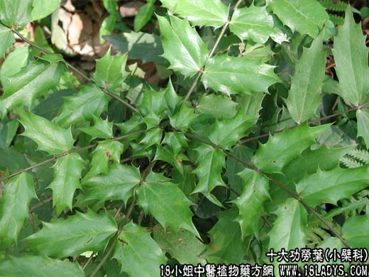

【中药概述】
十大功劳叶为小檗科常绿灌木植物狭叶十大功劳叶。苦，凉。归肺、肾经。
清热补虚，化痰止咳：主治肺结核咯血，骨蒸潮热，头晕耳鸣，腰腿酸软，心烦目赤，风热感冒等症。
【药效鉴别】
功劳叶滋阴清热，凉血解毒，兼行气分。
【临证应用】
主儿童急性扁桃体炎，属胃火积盛型，咽痛较甚，拒食，身热，口渴，咽部充血红肿。本品40g 甘草20g，水煎2次，一次服完，日1剂。
【药理作用】
对金黄色葡萄球菌、卡他球菌、炭疽杆菌、白喉杆菌等有抑制作用。
【化学成分】
含小檗碱、小檗胺、药根碱、掌叶防己碱、木兰碱等。
【用量用法】
本品8——15g，水煎服，或入剂。